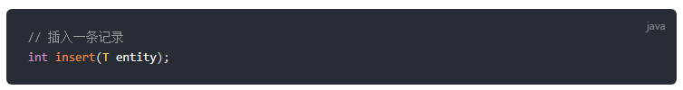
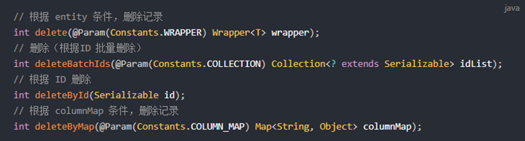

MybatisPlus
目标：
- 了解mybatisplus的特点
- 能够掌握mybatisplus快速入门
- 能够掌握mybatisplus常用注解
- 能够掌握mybatisplus常用的增删改查
- 能够掌握mybatisplus自动代码生成
1. 概述
•MyBatis-Plus（简称 MP）是一个 MyBatis 的增强工具，在 MyBatis 的基础上只做增强不做改变，为简化开发、提高效率而生。
•官网：https://mybatis.plus/ 或 https://mp.baomidou.com/

版本
<dependency>
<groupId>com.baomidou</groupId>
<artifactId>mybatis-plus</artifactId>
<version>3.4.0</version>
</dependency>2. 快速入门
SpringBoot 整合 MyBatis-Plus，并实现根据Id查询功能。
①数据库环境准备
②创建SpringBoot工程，引入MyBatis-Plus起步依赖
③编写DataSource相关配置
④编写mapper
⑤测试2.1 数据库环境准备
详见附件2.2 创建SpringBoot工程，引入MyBatis-Plus起步依赖
<parent>
<groupId>org.springframework.boot</groupId>
<artifactId>spring-boot-starter-parent</artifactId>
<version>2.3.4.RELEASE</version>
<relativePath/> <!-- lookup parent from repository -->
</parent>
<properties>
<java.version>1.8</java.version>
</properties>
<dependencies>
<dependency>
<groupId>org.springframework.boot</groupId>
<artifactId>spring-boot-starter</artifactId>
</dependency>
<!-- mysql 驱动-->
<dependency>
<groupId>mysql</groupId>
<artifactId>mysql-connector-java</artifactId>
<version>5.1.26</version>
</dependency>
<!-- lombok ,自动生成get,Set 方法-->
<dependency>
<groupId>org.projectlombok</groupId>
<artifactId>lombok</artifactId>
<optional>true</optional>
</dependency>
<dependency>
<groupId>org.springframework.boot</groupId>
<artifactId>spring-boot-starter-test</artifactId>
<scope>test</scope>
</dependency>
<!--mybatisplus起步依赖-->
<dependency>
<groupId>com.baomidou</groupId>
<artifactId>mybatis-plus-boot-starter</artifactId>
<version>3.4.0</version>
</dependency>
</dependencies>2.3 编写DataSource相关配置
# datasource
spring:
datasource:
url: jdbc:mysql:///mp
username: root
password: root
driver-class-name: com.mysql.jdbc.Driver2.4 编码
编写mapper
/**
* 使用mp定义Mapper，需要让Mapper接口继承 BaseMapper接口。
*/
public interface UserMapper extends BaseMapper<User> {
}实体类
@TableName("tb_user") // 指定表名
@Data
public class User {
private Long id;
private String userName;
private String password;
private String name;
private Integer age;
private String email;启动类增加 @MapperScan 注解
@MapperScan("com.itheima.mp.mapper")
@SpringBootApplication
public class MybatisPlusSpringbootApplication {
public static void main(String[] args) {
SpringApplication.run(MybatisPlusSpringbootApplication.class, args);
}
}
2.5 测试
@SpringBootTest
@RunWith(SpringRunner.class)
class UserMapperTest {
@Autowired
private UserMapper userMapper;
/**
* 根据id查询
*/
@Test
public void testSelectById() {
User user = userMapper.selectById(1L);
System.out.println(user);
}
}3. CRUD
3.1 添加
3.1.1 方法解析

3.1.2 测试
@Test
public void testInsert() {
User user = new User();
//user.setId(6L);
user.setUserName("itcast");
user.setPassword("itheima");
int count = userMapper.insert(user);
System.out.println(count);
}3.1.3 说明1, 实体类上的注解 @TableField
1) @TableField("user_name") 指定映射关系
实体类的属性名和数据库的字段名自动映射：
* 名称一样
* 数据库字段使用_分割，实体类属性名使用驼峰名称
否则需要使用 @TableField("user_name") 指定映射关系
2) 忽略某个字段的查询和 插入
@TableField(exist = false)
3) 设置id生成策略:AUTO 数据库自增
@TableId(type = IdType.AUTO)3.1.4 说明2, 配置
mybatis-plus:
global-config:
db-config:
# 表名前缀
table-prefix: tb_
# id生成策略 数据库自增
id-type: auto
configuration:
# 日志
log-impl: org.apache.ibatis.logging.stdout.StdOutImpl3.1.5 具体使用如下
/**
* 实体类的属性名和数据库的字段名自动映射：
* 1. 名称一样
* 2. 数据库字段使用_分割，实体类属性名使用驼峰名称
*/
@TableName("tb_user")
@Data
public class User {
//设置id生成策略:AUTO 数据库自增
@TableId(type = IdType.AUTO)
private Long id;
//@TableField("user_name")
private String userName;
private String password;
private String name;
private Integer age;
private String email;
//不希望该值存入数据库
// @TableField(exist = false)
// private String info;
}
3.2 删除

3.2.1 根据id删除
int count = userMapper.deleteById(8L);3.2.1 根据id集合批量删除
List ids = new ArrayList();
ids.add(6);
ids.add(7);
userMapper.deleteBatchIds(ids);3.2.1 根据map构造条件，删除
Map<String, Object> map = new HashMap<>();
//delete from tb_user where user_name = ? and age = ?
map.put("user_name","itcast");
map.put("age","18");
userMapper.deleteByMap(map);3.3 更新

@Test
public void testUpdateById() {
User user = new User();
user.setId(2L);
user.setPassword("1111111");
int count = userMapper.updateById(user);
}4 查询

4.1 分页查询
配置 拦截器
@Configuration
public class PageConfig {
/**
* 3.4.0之前的版本用这个
* @return
*/
/* @Bean
public PaginationInterceptor paginationInterceptor(){
return new PaginationInterceptor();
}*/
/**
* 3.4.0之后提供的拦截器的配置方式
* @return
*/
@Bean
public MybatisPlusInterceptor mybatisPlusInterceptor(){
MybatisPlusInterceptor mybatisPlusInterceptor = new MybatisPlusInterceptor();
mybatisPlusInterceptor.addInnerInterceptor(new PaginationInnerInterceptor());
return mybatisPlusInterceptor;
}
}查询
/**
* 分页查询：
* 1. 当前页码：currentPage
* 2. 每页显示条数：size
*
* 注意：使用mp的分页要设置一个拦截器！！！
*/
@Test
public void testSelectPage() {
int current = 1;//当前页码
int size = 2;//每页显示条数
IPage<User> page = new Page(current,size);
userMapper.selectPage(page,null);
List<User> records = page.getRecords();//当前页的数据
long pages = page.getPages();//总页数 2
long total = page.getTotal();//总记录数 4
System.out.println(records);
System.out.println(pages);
System.out.println(total);
}4.2 条件构造器查询
/**
* 基础比较查询
*
* Wrapper:
* 1.QueryWrapper
* LambdaQueryWrapper
* 2.UpdateWrapper
* LambdaUpdateWrapper
*
*/4.2.1 基础查询
通过 QueryWrapper 指定查询条件
eq( ) : 等于 =
ne( ) : 不等于 <>
gt( ) : 大于 >
ge( ) : 大于等于 >=
lt( ) : 小于 <
le( ) : 小于等于 <=
between ( ) : BETWEEN 值1 AND 值2
notBetween ( ) : NOT BETWEEN 值1 AND 值2
in( ) : in
notIn( ) ：not in@Test
public void testWrapper1(){
//1.创建查询条件构建器
QueryWrapper<User> wrapper = new QueryWrapper<>();
//2.设置条件
wrapper.eq("user_name","lisi")
.lt("age",23)
.in("name","李四","王五");
//select * from tb_user where user_name = ? and age < ? and name in (?,?)
List<User> users = userMapper.selectList(wrapper);
System.out.println(users);
}4.2.2 逻辑查询 or
or( ) ：让紧接着下一个方法用or连接 @Test
public void testWrapper2(){
//1.创建查询条件构建器
QueryWrapper<User> wrapper = new QueryWrapper<>();
//2.设置条件
wrapper.eq("user_name","lisi")
.or()
.lt("age",23)
.in("name","李四","王五");
/*
select * from tb_user where user_name = ? or age < ? and name in (?,?)
*/
List<User> users = userMapper.selectList(wrapper);
System.out.println(users);
}4.2.3 模糊查询 like
like
notLike
likeLeft
likeRight/**
* 模糊查询
*/
@Test
public void testWrapper3(){
//1.创建查询条件构建器
QueryWrapper<User> wrapper = new QueryWrapper<>();
//2.设置条件
wrapper.likeLeft("user_name","zhang");
/*
SELECT id,user_name,password,name,age,email
from tb_user
where user_name like ?
%zhang
*/
List<User> users = userMapper.selectList(wrapper);
System.out.println(users);
}4.2.4 排序查询
orderBy
orderByAsc
orderByDesc@Test
public void testWrapper4(){
//1.创建查询条件构建器
QueryWrapper<User> wrapper = new QueryWrapper<>();
//2.设置条件
wrapper.eq("user_name","lisi")
.or()
.lt("age",23)
.in("name","李四","王五")
//.orderBy(true,true,"age")
.orderByDesc("age");
/*
select * from tb_user where user_name = ? or age < ? and name in (?,?) order by age asc
*/
List<User> users = userMapper.selectList(wrapper);
System.out.println(users);
}4.2.5 select：指定需要查询的字段
@Test
public void testWrapper5(){
//1.创建查询条件构建器
QueryWrapper<User> wrapper = new QueryWrapper<>();
//2.设置条件
wrapper.eq("user_name","lisi")
.or()
.lt("age",23)
.in("name","李四","王五")
//.orderBy(true,true,"age")
.orderByDesc("age")
.select("id","user_name");
/*
select id,user_name from tb_user where user_name = ? or age < ? and name in (?,?) order by age asc
*/
List<User> users = userMapper.selectList(wrapper);
System.out.println(users);
}4.2.6 分页条件查询
@Test
public void testWrapper6(){
int current = 1;//当前页码
int size = 2;//每页显示条数
//1. 构建分页对象
Page<User> page = new Page<>(current,size);
//2. 构建条件对象
QueryWrapper<User> wrapper = new QueryWrapper();
wrapper.lt("age",23);
userMapper.selectPage(page,wrapper);
List<User> records = page.getRecords();
long total = page.getTotal();
long pages = page.getPages();
System.out.println(records);
System.out.println(total);//2
System.out.println(pages);//1
}4.2.7 LambdaQueryWrapper：消除代码中的硬编码
@Test
public void testWrapper7(){
LambdaQueryWrapper<User> wrapper = new LambdaQueryWrapper<>();
wrapper.eq(User::getUserName,"zhangsan");
userMapper.selectOne(wrapper);
}4.2.8 条件 删除

@Test
public void testWrapper8(){
QueryWrapper<User> wrapper = new QueryWrapper<>();
wrapper.eq("user_name","bbb");
userMapper.delete(wrapper);
}4.2.9 条件 update

@Test
public void testWrapper9(){
UpdateWrapper<User> wrapper = new UpdateWrapper<>();
//条件
wrapper.eq("user_name","lisi")
.set("password","22222");
//update tb_user set password = ? where user_name = ?
userMapper.update(null,wrapper);
}
@Test
public void testWrapper10(){
UpdateWrapper<User> wrapper = new UpdateWrapper<>();
//条件
wrapper.eq("user_name","lisi");
//update tb_user set password = ?,age = ? where user_name = ?
User user = new User();
user.setPassword("3333");
user.setAge(33);
userMapper.update(user,wrapper);
}5 service 封装
Mybatis-Plus 为了开发更加快捷，对业务层也进行了封装，直接提供了相关的接口和实现类。我们在进行业务层开发时，可以继承它提供的接口和实现类，使得编码更加高效
- 1. 定义接口继承IService
- 2. 定义实现类继承ServiceImpl<Mapper，Entity> 实现定义的接口接口
public interface _UserService extends IService<User> {
}实现类封装
@Service
public class _UserServiceImpl extends ServiceImpl<UserMapper, User> implements _UserService {}6. 逆向工程-代码生成器
AutoGenerator 是 MyBatis-Plus 的代码生成器，通过 AutoGenerator 可以快速生成 Entity、Mapper、Mapper XML、Service、Controller 等各个模块的代码，极大的提升了开发效率。
6.1 导入坐标
<parent>
<groupId>org.springframework.boot</groupId>
<artifactId>spring-boot-starter-parent</artifactId>
<version>2.3.4.RELEASE</version>
<relativePath/> <!-- lookup parent from repository -->
</parent>
<properties>
<java.version>1.8</java.version>
</properties>
<dependencies>
<dependency>
<groupId>org.springframework.boot</groupId>
<artifactId>spring-boot-starter</artifactId>
</dependency>
<dependency>
<groupId>mysql</groupId>
<artifactId>mysql-connector-java</artifactId>
<scope>runtime</scope>
<version>5.1.26</version>
</dependency>
<dependency>
<groupId>org.projectlombok</groupId>
<artifactId>lombok</artifactId>
<optional>true</optional>
</dependency>
<dependency>
<groupId>org.springframework.boot</groupId>
<artifactId>spring-boot-starter-test</artifactId>
<scope>test</scope>
</dependency>
<!--mybatis plus 起步依赖-->
<dependency>
<groupId>com.baomidou</groupId>
<artifactId>mybatis-plus-boot-starter</artifactId>
<version>3.4.0</version>
</dependency>
<!--mp 代码生成器-->
<dependency>
<groupId>com.baomidou</groupId>
<artifactId>mybatis-plus-generator</artifactId>
<version>3.4.0</version>
</dependency>
<dependency>
<groupId>org.freemarker</groupId>
<artifactId>freemarker</artifactId>
<version>2.3.30</version>
</dependency>
</dependencies>6.2 执行main 方法
// 演示例子，执行 main 方法控制台输入模块表名回车自动生成对应项目目录中
public class CodeGenerator {
/**
* <p>
* 读取控制台内容
* </p>
*/
public static String scanner(String tip) {
Scanner scanner = new Scanner(System.in);
StringBuilder help = new StringBuilder();
help.append("请输入" + tip + "：");
System.out.println(help.toString());
if (scanner.hasNext()) {
String ipt = scanner.next();
if (StringUtils.isNotBlank(ipt)) {
return ipt;
}
}
throw new MybatisPlusException("请输入正确的" + tip + "！");
}
public static void main(String[] args) {
// 代码生成器
AutoGenerator mpg = new AutoGenerator();
// 全局配置
GlobalConfig gc = new GlobalConfig();
String projectPath = System.getProperty("user.dir");
System.out.println(projectPath);
gc.setOutputDir(projectPath + "/src/main/java");
gc.setAuthor("itheima");
gc.setOpen(false);
// gc.setSwagger2(true); 实体属性 Swagger2 注解
mpg.setGlobalConfig(gc);
// 数据源配置
DataSourceConfig dsc = new DataSourceConfig();
dsc.setUrl("jdbc:mysql:///mp");
// dsc.setSchemaName("public");
dsc.setDriverName("com.mysql.jdbc.Driver");
dsc.setUsername("root");
dsc.setPassword("root");
mpg.setDataSource(dsc);
// 包配置
PackageConfig pc = new PackageConfig();
pc.setModuleName(scanner("模块名"));
pc.setParent("com.itheima");
mpg.setPackageInfo(pc);
// 自定义配置
InjectionConfig cfg = new InjectionConfig() {
@Override
public void initMap() {
// to do nothing
}
};
// 如果模板引擎是 freemarker
String templatePath = "/templates/mapper.xml.ftl";
// 如果模板引擎是 velocity
// String templatePath = "/templates/mapper.xml.vm";
// 自定义输出配置
List<FileOutConfig> focList = new ArrayList<>();
// 自定义配置会被优先输出
focList.add(new FileOutConfig(templatePath) {
@Override
public String outputFile(TableInfo tableInfo) {
// 自定义输出文件名 ， 如果你 Entity 设置了前后缀、此处注意 xml 的名称会跟着发生变化！！
return projectPath + "/src/main/resources/mapper/" + pc.getModuleName()
+ "/" + tableInfo.getEntityName() + "Mapper" + StringPool.DOT_XML;
}
});
/*
cfg.setFileCreate(new IFileCreate() {
@Override
public boolean isCreate(ConfigBuilder configBuilder, FileType fileType, String filePath) {
// 判断自定义文件夹是否需要创建
checkDir("调用默认方法创建的目录，自定义目录用");
if (fileType == FileType.MAPPER) {
// 已经生成 mapper 文件判断存在，不想重新生成返回 false
return !new File(filePath).exists();
}
// 允许生成模板文件
return true;
}
});
*/
cfg.setFileOutConfigList(focList);
mpg.setCfg(cfg);
// 配置模板
TemplateConfig templateConfig = new TemplateConfig();
// 配置自定义输出模板
//指定自定义模板路径，注意不要带上.ftl/.vm, 会根据使用的模板引擎自动识别
// templateConfig.setEntity("templates/entity2.java");
// templateConfig.setService();
// templateConfig.setController();
templateConfig.setXml(null);
mpg.setTemplate(templateConfig);
// 策略配置
StrategyConfig strategy = new StrategyConfig();
strategy.setNaming(NamingStrategy.underline_to_camel);
strategy.setColumnNaming(NamingStrategy.underline_to_camel);
//strategy.setSuperEntityClass("你自己的父类实体,没有就不用设置!");
strategy.setEntityLombokModel(true);
strategy.setRestControllerStyle(true);
// 公共父类
//strategy.setSuperControllerClass("你自己的父类控制器,没有就不用设置!");
// 写于父类中的公共字段
strategy.setSuperEntityColumns("id");
strategy.setInclude(scanner("表名，多个英文逗号分割").split(","));
strategy.setControllerMappingHyphenStyle(true);
strategy.setTablePrefix(pc.getModuleName() + "_");
mpg.setStrategy(strategy);
mpg.setTemplateEngine(new FreemarkerTemplateEngine());
mpg.execute();
}